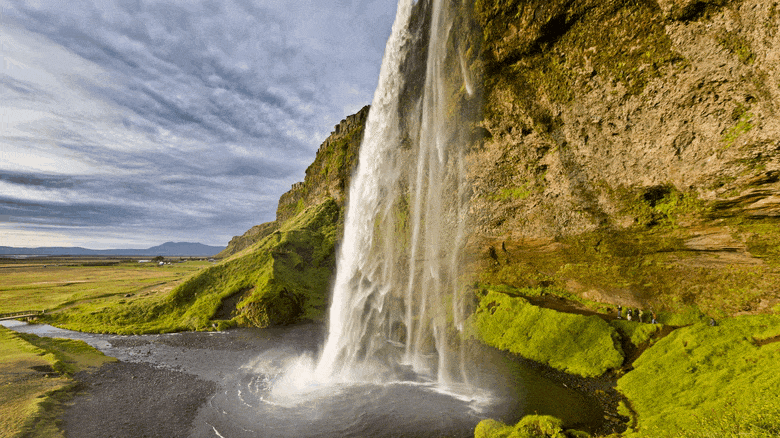

Інформація про Воду:

Однією з найважливіших світових проблем є Вода!
Дефіцит води відчувають на всіх континентах і близько 2,8 мільярда людей у всьому світі щонайменше один місяць на рік. Понад 1,2 мільярда людей не мають доступу до чистої питної води. Дефіцит води включає в себе водний стрес, нестачу або дефіцит води та водну кризу. Це життєво важлива проблема, яка потребує негайної уваги.
Як зберегти Воду:
Водозбереження має вирішальне значення, оскільки допомагає запобігти дефіциту води, забезпечує її доступність для майбутніх поколінь, зменшує потребу в очищенні води та допомагає захистити навколишнє середовище. Це також економить енергію, підтримує водопостачання в посушливі періоди і навіть може заощадити гроші на рахунках за комунальні послуги.
- Закривайте кран, коли чистите зуби або голитеся: Це може заощадити приблизно 200 галонів води на місяць.
- Приймайте коротший душ: Душ використовує приблизно 2 галони води на хвилину. Короткий душ використовує значно менше води, ніж ванна.
- Спускайте воду в туалеті лише за необхідності: Не використовуйте унітаз як кошик для сміття. Для одного змиву потрібно 1-8 галонів води.
- Витіснити частину води з бачка вашого туалету: Ви можете зробити це, наповнивши пляшку з водою або герметичний пакет камінчиками і поклавши їх у бачок туалету.
- Зберігайте воду належним чином: Якщо ви зберігаєте воду вдома, позначте ємність як "питна вода" і міняйте воду кожні шість місяців.